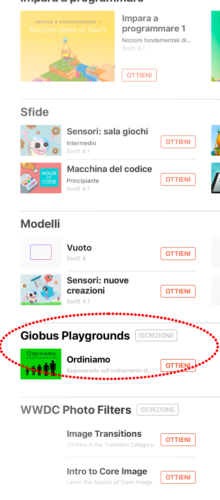

Benvenuto in Giobus Playgrounds!
Giovanna Busconi

Al World Wide Developers Conference 2018 di APPLE hannpo annunciato che Swift Playgrounds ora supporta anche l'iscrizione di terze parti.
Ho raccolto i Playgrounds utilizzati nei miei corsi di formazione che condivido molto volentieri con i colleghi che vogliono avvicinarsi al linguaggio SWIFT o che vogliono utilizzarlo nelle loro classi.
Clicca
qui per accedere all'iscrizione al feed di Swift Playground che ti consente di scaricare tutte le attivita' prodotte per i corsi di coding.